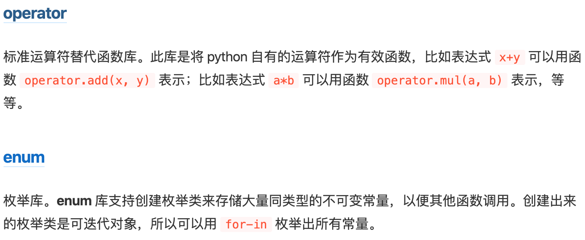

库¶

标准库的数据结构和算法¶
数据结构¶
{kind=link}
算法¶
| bisect |
|
||||||||||||||
|---|---|---|---|---|---|---|---|---|---|---|---|---|---|---|---|
| itertools |
|
{kind=link}
{kind=link}
{kind=link}
标准库¶
正则表达式¶
时间日期¶
原则, 以datetime为中心, 起点或中转, 转化为目标对象, 涵盖了大多数业务场景中需要的日期转换处理
步骤:
1. 掌握几种对象及其关系2. 了解每类对象的基本操作方法3. 通过转化关系转化涉及对象
1. datetime
>>> import datetime>>> now = datetime.datetime.now()>>> nowdatetime.datetime(2015, 1, 12, 23, 9, 12, 946118)>>> type(now)<type ‘datetime.datetime’>2. timestamp
>>> import time>>> time.time()1421075455.5682433. time tuple
>>> import time>>> time.localtime()time.struct_time(tm_year=2015, tm_mon=1, tm_mday=12, tm_hour=23, tm_min=10, tm_sec=30, tm_wday=0, tm_yday=12, tm_isdst=0)4. string
>>> import datetime>>> datetime.datetime.now().strftime(“%Y-%m-%d %H:%M:%S”)‘2015-01-12 23:13:08’5. date
>>> import datetime>>> datetime.datetime.now().date()datetime.date(2015, 1, 12)datetime基本操作
1. 获取当前datetime
>>> import datetime>>> datetime.datetime.now()datetime.datetime(2015, 1, 12, 23, 26, 24, 475680)2. 获取当天date
>>> datetime.date.today()datetime.date(2015, 1, 12)3. 获取明天/前N天
明天
>>> datetime.date.today() + datetime.timedelta(days=1)datetime.date(2015, 1, 13)三天前
>>> datetime.datetime.now()datetime.datetime(2015, 1, 12, 23, 38, 55, 492226)>>> datetime.datetime.now() - datetime.timedelta(days=3)datetime.datetime(2015, 1, 9, 23, 38, 57, 59363)4. 获取当天开始和结束时间(00:00:00 23:59:59)
>>> datetime.datetime.combine(datetime.date.today(), datetime.time.min)datetime.datetime(2015, 1, 12, 0, 0)>>> datetime.datetime.combine(datetime.date.today(), datetime.time.max)datetime.datetime(2015, 1, 12, 23, 59, 59, 999999)5. 获取两个datetime的时间差
>>> (datetime.datetime(2015,1,13,12,0,0) - datetime.datetime.now()).total_seconds()44747.7680756. 获取本周/本月/上月最后一天
本周
>>> today = datetime.date.today()>>> todaydatetime.date(2015, 1, 12)>>> sunday = today + datetime.timedelta(6 - today.weekday())>>> sundaydatetime.date(2015, 1, 18)本月
>>> import calendar>>> today = datetime.date.today()>>> _, last_day_num = calendar.monthrange(today.year, today.month)>>> last_day = datetime.date(today.year, today.month, last_day_num)>>> last_daydatetime.date(2015, 1, 31)获取上个月的最后一天(可能跨年)
>>> import datetime>>> today = datetime.date.today()>>> first = datetime.date(day=1, month=today.month, year=today.year)>>> lastMonth = first - datetime.timedelta(days=1)关系转换
几个关系之间的转化
Datetime Object / String / timestamp / time tuple
关系转换例子
datetime <=> string
datetime -> string
>>> import datetime>>> datetime.datetime.now().strftime(“%Y-%m-%d %H:%M:%S”)‘2015-01-12 23:13:08’string -> datetime
>>> import datetime>>> datetime.datetime.strptime(“2014-12-31 18:20:10”, “%Y-%m-%d %H:%M:%S”)datetime.datetime(2014, 12, 31, 18, 20, 10)datetime <=> timetuple
datetime -> timetuple
>>> import datetime>>> datetime.datetime.now().timetuple()time.struct_time(tm_year=2015, tm_mon=1, tm_mday=12, tm_hour=23, tm_min=17, tm_sec=59, tm_wday=0, tm_yday=12, tm_isdst=-1)timetuple -> datetime
timetuple => timestamp => datetime [看后面datetime<=>timestamp]
datetime <=> date
datetime -> date
>>> import datetime>>> datetime.datetime.now().date()datetime.date(2015, 1, 12)date -> datetime
>>> datetime.date.today()datetime.date(2015, 1, 12)>>> today = datetime.date.today()>>> datetime.datetime.combine(today, datetime.time())datetime.datetime(2015, 1, 12, 0, 0)>>> datetime.datetime.combine(today, datetime.time.min)datetime.datetime(2015, 1, 12, 0, 0)datetime <=> timestamp
datetime -> timestamp
>>> now = datetime.datetime.now()>>> timestamp = time.mktime(now.timetuple())>>> timestamp1421077403.0timestamp -> datetime
>>> datetime.datetime.fromtimestamp(1421077403.0)datetime.datetime(2015, 1, 12, 23, 43, 23)
logging¶
logging是线程安全的
日志级别
| 级别 | 何时使用 |
|---|---|
| DEBUG | 详细信息，典型地调试问题时会感兴趣。 |
| INFO | 证明事情按预期工作。 |
| WARNING | 表明发生了一些意外，或者不久的将来会发生问题（如‘磁盘满了’）。软件还是在正常工作。 |
| ERROR | 由于更严重的问题，软件已不能执行一些功能了。 |
| CRITICAL | 严重错误，表明软件已不能继续运行了。 |
简单的将日志打印到屏幕:
import logging
logging.debug('This is debug message')
logging.info('This is info message')
logging.warning('This is warning message')
屏幕上打印:
WARNING:root:This is warning message
默认情况下，logging将日志打印到屏幕，日志级别为WARNING；
logging的几个静态方法 logging.info(“”) 自动转发到 root 记录器，即 logging.info => logging.getLogger().info(“”)
通过logging.basicConfig函数对日志的输出格式及方式做相关配置:
import logging
logging.basicConfig(level=logging.DEBUG,
format='%(asctime)s %(filename)s[line:%(lineno)d] %(levelname)s %(message)s',
datefmt='%a, %d %b %Y %H:%M:%S',
filename='myapp.log',
filemode='w')
logging.debug('This is debug message')
logging.info('This is info message')
logging.warning('This is warning message')
./myapp.log文件中内容为::
Sun, 24 May 2009 21:48:54 demo2.py[line:11] DEBUG This is debug message
Sun, 24 May 2009 21:48:54 demo2.py[line:12] INFO This is info message
Sun, 24 May 2009 21:48:54 demo2.py[line:13] WARNING This is warning message
basicConfig关键字参数
| 关键字 | 描述 |
|---|---|
| filename | 创建一个FileHandler，使用指定的文件名，而不是使用StreamHandler。 |
| filemode | 如果指明了文件名，指明打开文件的模式（如果没有指明filemode，默认为’a’）。 |
| format | handler使用指明的格式化字符串。 |
| datefmt | 使用指明的日期／时间格式。 |
| level | 指明根logger的级别。 |
| stream | 使用指明的流来初始化StreamHandler。该参数与’filename’不兼容，如果两个都有，’stream’被忽略。 |
将日志同时输出到文件和屏幕:
import logging
logging.basicConfig(level=logging.DEBUG,
format='%(asctime)s %(filename)s[line:%(lineno)d] %(levelname)s %(message)s',
datefmt='%a, %d %b %Y %H:%M:%S',
filename='myapp.log',
filemode='w')
定义一个StreamHandler，将INFO级别或更高的日志信息打印到标准错误，并将其添加到当前的日志处理对象:
console = logging.StreamHandler()
console.setLevel(logging.INFO)
formatter = logging.Formatter('%(name)-12s: %(levelname)-8s %(message)s')
console.setFormatter(formatter)
logging.getLogger('').addHandler(console)
logging之日志回滚:
import logging
from logging.handlers import RotatingFileHandler
#定义一个RotatingFileHandler，最多备份5个日志文件，每个日志文件最大10M:
Rthandler = RotatingFileHandler('myapp.log', maxBytes=10*1024*1024,backupCount=5)
Rthandler.setLevel(logging.INFO)
formatter = logging.Formatter('%(name)-12s: %(levelname)-8s %(message)s')
Rthandler.setFormatter(formatter)
logging.getLogger('').addHandler(Rthandler)
Handler¶
logging有一个日志处理的主对象，其它处理方式都是通过addHandler添加进去的。
logging的几种handle方式如下:
logging.StreamHandler: 日志输出到流，可以是sys.stderr、sys.stdout或者文件
logging.FileHandler: 日志输出到文件
日志回滚方式，实际使用时用RotatingFileHandler和TimedRotatingFileHandler
logging.handlers.BaseRotatingHandler
logging.handlers.RotatingFileHandler
logging.handlers.TimedRotatingFileHandler
logging.handlers.SocketHandler: 远程输出日志到TCP/IP sockets
logging.handlers.DatagramHandler: 远程输出日志到UDP sockets
logging.handlers.SMTPHandler: 远程输出日志到邮件地址
logging.handlers.SysLogHandler: 日志输出到syslog
logging.handlers.NTEventLogHandler: 远程输出日志到Windows NT/2000/XP的事件日志
logging.handlers.MemoryHandler: 日志输出到内存中的制定buffer
logging.handlers.HTTPHandler: 通过"GET"或"POST"远程输出到HTTP服务器
由于StreamHandler和FileHandler是常用的日志处理方式，所以直接包含在logging模块中，而其他方式则包含在logging.handlers模块中，
配置日志¶
配置日志至少有以下三种方式：
- 使用INI格式文件：
- 优点: 使用 logging.config.listen() 函数监听socket，可在运行过程中更新配置
- 缺点: 通过源码控制日志配置较少（ 例如 子类化定制的过滤器或记录器）。
- 使用字典或JSON格式文件：
- 优点: 除了可在运行时动态更新，在Python 2.6之后，还可通过 json 模块从其它文件中导入配置。
- 缺点: 很难通过源码控制日志配置。
- 使用源码：
- 优点: 对配置绝对的控制。
- 缺点: 对配置的更改需要对源码进行修改。
通过INI文件进行配置的例子
我们假设文件名为 logging_config.ini 。关于文件格式的更多细节，请参见 日志指南中的 日志配置 部分。
[loggers]keys=root[handlers]keys=stream_handler[formatters]keys=formatter[logger_root]level=DEBUGhandlers=stream_handler[handler_stream_handler]class=StreamHandlerlevel=DEBUGformatter=formatterargs=(sys.stderr,)[formatter_formatter]format=%(asctime)s %(name)-12s %(levelname)-8s %(message)s然后在源码中调用 logging.config.fileConfig() 方法:import loggingfrom logging.config import fileConfigfileConfig(‘logging_config.ini’)logger = logging.getLogger()logger.debug(‘often makes a very good meal of %s’, ‘visiting tourists’)通过字典进行配置的例子
Python 2.7中，你可以使用字典实现详细配置。PEP 391 包含了一系列字典配置的强制和 非强制的元素:
import loggingfrom logging.config import dictConfiglogging_config = dict(version = 1,formatters = {‘f’: {‘format’:‘%(asctime)s %(name)-12s %(levelname)-8s %(message)s’}},handlers = {‘h’: {‘class’: ‘logging.StreamHandler’,‘formatter’: ‘f’,‘level’: logging.DEBUG}},root = {‘handlers’: [‘h’],‘level’: logging.DEBUG,},)dictConfig(logging_config)
logger = logging.getLogger()logger.debug(‘often makes a very good meal of %s’, ‘visiting tourists’)通过源码直接配置的例子
import logging
logger = logging.getLogger()handler = logging.StreamHandler()formatter = logging.Formatter(‘%(asctime)s %(name)-12s %(levelname)-8s %(message)s’)handler.setFormatter(formatter)logger.addHandler(handler)logger.setLevel(logging.DEBUG)logger.debug(‘often makes a very good meal of %s’, ‘visiting tourists’)
argparse & gflags & getopt & ConfigParser¶
总之：命令行参数优先使用 argparse，如果需要分布式就使用 gflags。读取ini配置文件就用 ConfigParser。不再使用getopt。
argparse 模块¶
argparse是标准库，在一般的情况下应该最优先使用，不过它不是分布式的，所以还无法取代gflags。在不需要分布式的情况下，argparse实现的确实非常优秀，值得进入标准库。
帮助文档： http://python.usyiyi.cn/translate/python_278/library/argparse.html
基础用法：
parser = argparse.ArgumentParser(description=’Process some integers.’)parser.add_argument(‘integers’, metavar=’N’, type=int, nargs=’+’,help=’an integer for the accumulator’)parser.add_argument(‘–sum’, dest=’accumulate’, action=’store_const’,const=sum, default=max,help=’sum the integers (default: find the max)’)args = parser.parse_args()
最重要的 add_argument() 方法：
定义应该如何解析一个命令行参数。下面每个参数有它们自己详细的描述，简单地讲它们是：
name or flags - 选项字符串的名字或者列表，例如foo 或者-f, –foo。
action - 在命令行遇到该参数时采取的基本动作类型。
nargs - 应该读取的命令行参数数目。
const - 某些`action <http://python.usyiyi.cn/documents/python_278/library/argparse.html#action>`__和nargs选项要求的常数值。
default - 如果命令行中没有出现该参数时的默认值。
type - 命令行参数应该被转换成的类型。
choices - 参数可允许的值的一个容器。
required - 该命令行选项是否可以省略（只针对可选参数）。
help - 参数的简短描述。
metavar - 参数在帮助信息中的名字。
dest - 给`parse_args()` 返回的对象要添加的属性名称。
三种参数：
可选参数 ：parser.add_argument(‘–foo’,type=int,help=”foohelp”)
必选参数： parser.add_argument(‘–foo’,type=int,help=”foohelp”,required=True)
位置参数： parser.add_argument(‘bar’,help=”barhelp”)
理解 action 类型就理解了 add_argument （action类型还可以自定义，通过继承Api基类）：
- ‘store’ - 只是保存参数的值。这是默认的动作。例如：>>> parser = argparse.ArgumentParser()>>> parser.add_argument(‘–foo’)>>> parser.parse_args(‘–foo 1’.split())Namespace(foo=‘1’)
-
>>> parser = argparse.ArgumentParser()>>> parser.add_argument(‘–foo’, action=’store_const’, const=42)>>> parser.parse_args(‘–foo’.split())Namespace(foo=42)
- ‘store_true’和’store_false’ - 它们是’store_const’ 的特殊情形，分别用于保存值True和False。另外，它们分别会创建默认值False 和True。例如：>>> parser = argparse.ArgumentParser()>>> parser.add_argument(‘–foo’, action=’store_true’)>>> parser.add_argument(‘–bar’, action=’store_false’)>>> parser.add_argument(‘–baz’, action=’store_false’)>>> parser.parse_args(‘–foo –bar’.split())Namespace(bar=False, baz=True, foo=True)
- ‘append’ - 保存一个列表，并将每个参数值附加在列表的后面。这对于允许指定多次的选项很有帮助。示例用法：>>> parser = argparse.ArgumentParser()>>> parser.add_argument(‘–foo’, action=’append’)>>> parser.parse_args(‘–foo 1 –foo 2’.split())Namespace(foo=[‘1’, ‘2’])
- >>> parser = argparse.ArgumentParser()>>> parser.add_argument(‘–str’, dest=’types’, action=’append_const’, const=str)>>> parser.add_argument(‘–int’, dest=’types’, action=’append_const’, const=int)>>> parser.parse_args(‘–str –int’.split())Namespace(types=[<type ‘str’>, <type ‘int’>])
- ‘count’ - 计算关键字参数出现的次数。例如，这可用于增加详细的级别：>>> parser = argparse.ArgumentParser()>>> parser.add_argument(‘–verbose’, ‘-v’, action=’count’)>>> parser.parse_args(‘-vvv’.split())Namespace(verbose=3)
‘help’ - 打印当前解析器中所有选项的完整的帮助信息然后退出。默认情况下，help动作会自动添加到解析器中。参见ArgumentParser以得到如何生成输出信息。
‘version’ - 它期待version=参数出现在add_argument()调用中，在调用时打印出版本信息并退出：
>>> import argparse>>> parser = argparse.ArgumentParser(prog=’PROG’)>>> parser.add_argument(‘–version’, action=’version’, version=’%(prog)s 2.0’)>>> parser.parse_args([‘–version’])PROG 2.0
其它值得留意的部分：
部分解析 ArgumentParser.parse_known_args(args=None, namespace=None)
有些时候，脚本可能只会解析命令行参数一部分并将剩余的参数传递给另外一个脚本或程序。除了在出现多余的参数时不会产生错误信息以外，它工作的方式与parse_args()非常类似。相反，它返回一个两个元素的元组，包含构造的namespace和剩余的参数字符串的列表。
>>> parser = argparse.ArgumentParser()>>> parser.add_argument(‘–foo’, action=’store_true’)>>> parser.add_argument(‘bar’)>>> parser.parse_known_args([‘–foo’, ‘–badger’, ‘BAR’, ‘spam’])(Namespace(bar=’BAR’, foo=True), [‘–badger’, ‘spam’])Namespace 对象 class argparse.Namespace
parse_args() 默认使用的简单的类，用于创建一个保存属性的对象并返回该对象。
有时可能需要让ArgumentParser分配属性给一个已经存在的对象而不是一个新的Namespace对象。这可以通过指定namespace=关键字参数达到：
>>> class C(object):… pass…>>> c = C()>>> parser = argparse.ArgumentParser()>>> parser.add_argument(‘–foo’)>>> parser.parse_args(args=[‘–foo’, ‘BAR’], namespace=c)>>> c.foo‘BAR’还有很多高级的特性，如：
- 子命令：大型程序生成像 git status, git commit 之类
- 参数组：在 help 时分组显示
- 互斥分组
- 支持短参数的连写实现 tar -zxf 及缩写 –abcd => -ab
总之，argparse 几乎可以实现非分布式参数的所有情况，非常强大的！
gflags 模块¶
GFlags defines a *distributed* command line system, replacing systems like getopt(), optparse and manual argument processing. Rather than an application having to define all flags in or near main(), each python module defines flags that are useful to it. When one python module imports another, it gains access to the other’s flags.
从官方介绍中也可以看出来， gflags 跟其它命令行参数最大的不同在于，它是分布式的，不需要把所有的参数定义都放在 main 函数附近。分布式非常有用！
这是Google C++ 版 gflags 的python版本，使用pip安装 pip install python-gflags
基本跟 C++版的gflags一样，可以视为C++的简化版，一些不同如下：
- gflags::ParseCommandLineFlags(&argc, &argv, true); 变成了 gflags.FLAGS(sys.argv)
- 一些类似于 gflags::SetVersionString的辅助函数没有了
- 取消了诸如 –help, –version 之类的预定义参数
基础用法:
import gflags
FLAGS=gflags.FLAGS
gflags.DEFINE_bool('debug',\ False, 'show debug info')
gflags.DEFINE_string('name','tanchuanqi', 'your name')
gflags.DEFINE_integer('age',17, 'your age')
try:
FLAGS(sys.argv) # FLAGS(sys.argv, True) True指示对未知参数原封不动返回，而不是报错
except gflags.FlagsError\ as\ e:
print(e)
sys.exit(1)
getopt 模块¶
官方 Note 说明 getopt 应该被 argparse 所替代 ，getopt 应该被弃用！
其它库¶
一个有趣的库：pipe¶
pipe展示了一种很有新意的使用迭代器和生成器的方式：流。
pipe将可迭代的数据看成是流，类似于linux，pipe使用 ‘|’ 传递数据流，并且定义了一系列的“流处理”函数用于接受并处理数据流，并最终再次输出数据流或者是将数据流归纳得到一个结果。
>>> from pipe import \*
>>> range(5) \| add
10
>>> range(5) \| where(lambda x: x % 2 == 0) \| add
6
pipe中还包括了更多的流处理函数。你甚至可以自己定义流处理函数，只需要定义一个生成器函数并加上修饰器Pipe。如下定义了一个获取元素直到索引不符合条件的流处理函数：
>>> @Pipe
... def take_while_idx(iterable, predicate):
... for idx, x in enumerate(iterable):
... if predicate(idx): yield x
... else: return
科学计算生态¶
发行版：Python(x,y), WinPython, Anaconda
包管理：conda, pip
交互工具：Spyder, ipython, Jupyter(ipython notebook)
基础库：numpy, SciPy, Matplotlib, Pandas
深度学习库：TensorFlow, Keras, Theano
其它科学库：Sympy, Scikit-image, Traits, TraitsUI, Chaco, TVTK, Mayavi, Scikit-learn,
OpenCV
conda install -c https://conda.binstar.org/menpo opencv
优质教程和书：
- 用Python做科学计算： http://bigsec.net/b52/scipydoc/index.html
Anaconda¶
Anaconda主要是有三个功能：自带了许多科学计算的库、支持隔离环境、更好的库管理功能
Anaconda支持类似于virtualenv的隔离环境功能（默认环境名为root）
| conda create -n test python=3.5 numpy pandas | 创建名为 test 的隔离环境，使用3.5版本的python，同时添加 numpy, pandas 两个包 |
|---|---|
| conda create -n dst –clone srt | 从srt克隆一个新的名为dst的隔离环境 |
| source activate test | 激活隔离环境 |
| source deactivate | 退出隔离环境 |
| conda env list | 列出所有隔离环境 |
| conda env remove –name test –all | 删除隔离环境 |
Anaconda还支持类似于PIP的包管理功能
| conda search | 搜索包 |
|---|---|
| conda list | 列出安装的包 |
| conda install –name env package_name | 安装包 |
| conda remove –name env package_name | 卸载包 alias -> uninstall |
| conda update package_name | 更新包 alias -> upgrade |
conda 安装包与PIP的区别和联系
- pip只是包管理器，无法对环境进行管理。因此如果想在指定环境中使用pip进行安装包，则需要先切换到指定环境中，再使用pip命令安装包。
- pip无法更新python，因为pip并不将python视为包。
- pip可以安装一些conda无法安装的包；conda也可以安装一些pip无法安装的包。因此当使用一种命令无法安装包时，可以尝试用另一种命令。
据我观察，在conda中使用PIP安装的包应该是在
~/anaconda3/lib/python3.5/site-packages/pip/_vendor 目录下
也支持类似于PIP的freeze功能
conda env export > environment.yaml
conda env update -f=/path/to/environment.yaml
conda将conda、python等都视为package，因此，完全可以使用conda来管理conda和python的版本，例如
# 更新conda，保持conda最新
conda update conda
# 更新anaconda
conda update anaconda
# 更新python conda
update python
# 假设当前环境是python 3.4, conda会将python升级为3.4.x系列的当前最新版本
区分conda和anaconda的概念
conda是包管理工具。
anaconda是用来做科学计算的这些包的集合，也就是所谓的发行版。
软件发行版是在系统上提前编译和配置好的软件包集合， 装好了后就可以直接用。
包管理器是自动化软件安装，更新，卸载的一种工具。
设置国内源
# 添加Anaconda的TUNA镜像conda config –add channels https://mirrors.tuna.tsinghua.edu.cn/anaconda/pkgs/free/# TUNA的help中镜像地址加有引号，需要去掉
NumPy¶
Numpy主要的功能有：数组运算、线性代数运算
基本名词：随着数组维度的增加，依次被称为：标量、向量、矩阵、张量
NumPy 通常与 SciPy（Scientific Python） 和 Matplotlib（绘图库） 一起使用。 这种组合广泛用于替代 MatLab，是一个流行的技术计算平台。
- Python 作为MatLab 的替代方案，现在被视为一种更加现代和完整的编程语言。
- NumPy 是开源的，这是它的一个额外的优势。
NumPy 中定义的最重要的对象是称为 ndarray 的 N 维数组类型。 它描述相同类型的元素集合。 可以使用基于零的索引访问集合中的项目。
内存结构如下图所示：
数据类型¶
NumPy 数字类型是 dtype （数据类型） 对象的实例，数据类型对象描述了对应于数组的固定内存块的解释。
numpy内置定义了很多数据类型，如np.int8, np,float32 等
构造方法：numpy.dtype(object, align, copy)
使用示例：np.dtype(np.int8)、 np.dtype(‘i4’)
下面的用法相当于python里快捷创建一个命名tuple:
student = np.dtype([('name','S20'), ('age', 'i1'), ('marks', 'f4')])
a = np.array([('abc', 21, 50),('xyz', 18, 75)], dtype = student)
print a
OUTPUT:
[('abc', 21, 50.0), ('xyz', 18, 75.0)]
创建：¶
构造方法：numpy.ndarray([1,2,3])
- 直接创建一个shape=(1,2,3)的ndarray，这里传入的只是ndarray的shape，跟上面传入数组的内容要区分开。
常用的创建数组的工厂方法：
- empty()：创建指定形状和 dtype 的未初始化数组
- zeros()：返回特定大小，以 0 填充的新数组
- ones()：返回特定大小，以 1 填充的新数组
- eye()：创建单位数组
从现在数据构建：
- numpy.array(object, dtype = None, copy = True, order = None, subook = False, ndmin = 0)
- 一般通过这个方法直接创建，这里传入的object是一个python的list，表明了将来创建的ndarray的实际内容。
- numpy.asarray(a, dtype = None, order = None)
- 此函数类似于 numpy.array ，除了它有较少的参数。
- numpy.frombuffer()
- numpy.fromiter()
从数值范围创建：
- numpy.arange(start, stop, step, dtype)
- numpy.linspace(start, stop, num, endpoint, retstep, dtype) 类似于arange()，从一个范围里创建指定数量的均匀分布的元素
- numpy.logscale(start, stop, num, endpoint, base, dtype) 上面类似，对数刻度上的均匀分布
访问¶
ndarray对象中的元素遵循基于零的索引。 有三种可用的索引方法类型：
- 字段访问：使用从0开始的下标访问
- 基本切片：Python 中基本切片概念到 n 维的扩展，将 start ， stop 和 step 参数提供给内置的 slice 函数来构造一个 Python slice 对象。
- 高级索引：
- 整数索引：x[[0,1,2], [0,1,0]] 的结果是数组中 (0,0) ， (1,1) 和 (2,0) 位置处的元素。
- 布尔索引：非常神奇，print x[x > 5] 会打印出“大于5的元素”。
广播¶
术语广播是指 NumPy 在算术运算期间处理不同形状的数组的能力。
因为一些操作对两个数组的维数有要求，广播功能会将较小的数组广播到较大数组的大小，以便使它们的形状可兼容。
基本上，就是会对一些长度为1的纬度进行复制扩展，使得这些长度为1的维度符合运算的要求。
迭代¶
NumPy 包包含一个迭代器对象 numpy.nditer 。 它是一个有效的多维迭代器对象，可以用于在数组上进行迭代。 迭代的顺序匹配数组的内容布局，而不考虑特定的排序。
nditer 对象有另一个可选参数 op_flags 。 其默认值为只读，但可以设置为读写或只写模式。 这将允许使用此迭代器修改数组元素。
如果两个数组是可广播的， nditer 组合对象能够同时迭代它们。
np.nditer([a,b])
数组操作
reshape
flat：返回数组上的一维迭代器
flatten：返回折叠为一维的数组副本
ravel：返回展开的一维数组，并且按需生成副本
transpose：翻转给定数组的维度。如果可能的话它会返回一个视图
T：数组的转置，transpose的特殊情况
rollaxis：向后滚动特定的轴，直到一个特定位置
swapaxes：交换数组的两个轴
broadcast：返回将一个数组广播到另一个数组的结果
boardcast：广播到特定的形状，返回只读视图
expand_dims：在指定位置插入新的轴来扩展数组形状
squeeze：从给定数组的形状中删除一维条目
数组的连接：
- concatenate：沿现存的轴连接
- stack：沿新轴进行连接
- hstack：水平堆叠，stack的特殊调用
- vstack：垂直堆叠，stack的特殊调用
数组分割：
- split
- hsplit
- vsplit
添加删除元素：
- resize 返回指定形状的新数组，如果新大小大于原始大小，则包含原始数组中的元素的重复副本。
- append 将值添加到数组末尾， 附加操作不是原地的，而是分配新的数组。
- insert 沿指定轴将值插入到指定下标之前，插入没有原地的，函数会返回一个新数组。
- delete 返回删掉某个轴的子数组的新数组
- unique 寻找数组内的唯一元素
位操作：
字符串函数（对 dtype 为 numpy.string_ 或 numpy.unicode_ 的数组执行向量
化字符串操作）：

数值运算：
- 三角函数：sin, cos, tan 等等
- 四舍五入：around(), floor(), ceil()
- 加减乘除：add() ， subtract() ， multiply() 和 divide()
- 倒数：reciprocal()、幂 pow()、 取余 mod()
统计：
- amin() 极小, amax() 极大, median()中间值, ptp() 取值范围
- mean()算术平均值、average()加权平均值
- std()标准差、var()方差
排序、搜索、计数
- 排序：sort(), argsort(), lexsort()
- 搜索：argmax(), argmin(), nonzero(),
- 高级搜索：
- where()： where(x>5)，类似于高级索引
- extract()：用任何条件进行过滤
副本和视图¶
很明显，副本是深度复制，而视图只是复制了元信息。
- NumPy 拥有 ndarray.view() 方法，它是一个新的数组对象，并可查看原始数组的相同数据。
- ndarray.copy() 函数创建一个深层副本。
numpy.linalg 线性代数¶
Numpy IO¶
NumPy 为 ndarray 对象引入了一个简单的文件格式。 这个 npy 文件在磁盘文件中，存储重建 ndarray 所需的数据、图形、 dtype 和其他信息，以便正确获取数组，即使该文件在具有不同架构的另一台机器上。
ndarray 对象可以保存到磁盘文件并从磁盘文件加载。 可用的 IO 功能有：
- np.tofile() & np.fromfile()：二进制 raw 格式
- np.save() & np.load() & np.savez() ：这是最常用的IO方法。load()和save()用Numpy专用的二进制格式保存数据，它们会自动处理元素类型和形状等信息。savez()提供了将多个数组存储至一个文件的能力，调用load()方法返回的对象，可以使用数组名对各个数组进行读取。
- savetxt() & loadtxt()：文本格式
Numpy Cheat Sheet